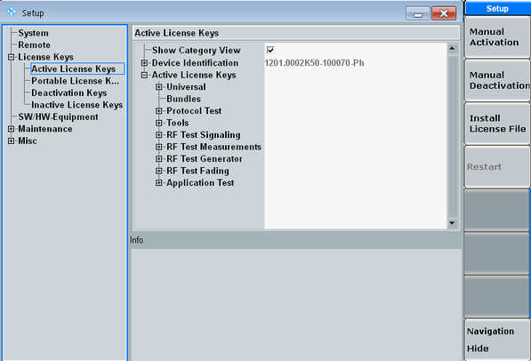

The "License Keys" section of the "Setup" dialog allows you to manage licenses. You can apply a delivered activation key or deactivation key. You can also perform steps required to move a portable license.
If you install a new software option, you must enable the option via an activation key, before you can use the option.
Only registered licenses are accepted. If your license is delivered unregistered, use the online tool R&S License Manager to register the license. Note that the registration of a non-portable license is irreversible, so ensure that you register it with the correct device ID. The address of the tool is https://extranet.rohde-schwarz.com/service. The R&S License Manager allows you also to move a portable license to another device ID. For detailed step-by-step instructions, refer to the installation instructions delivered together with the license and to the documentation available in the R&S License Manager (in the online tool, press ). For an example, see "Moving a Portable License". |
- "Active License Keys": lists non-portable active licenses. The list can be sorted alphabetically or by category (toggle parameter "Show Category View").
- "Portable License Keys": lists portable active licenses
- "Deactivation Keys": lists applied deactivation keys
- "Inactive License Keys": lists licenses that have been explicitly deactivated by a deactivation key or are for any other reason inactive, for example expired licenses

The "Device Identification" at the top of the sections is required for identification in the online tool R&S License Manager.